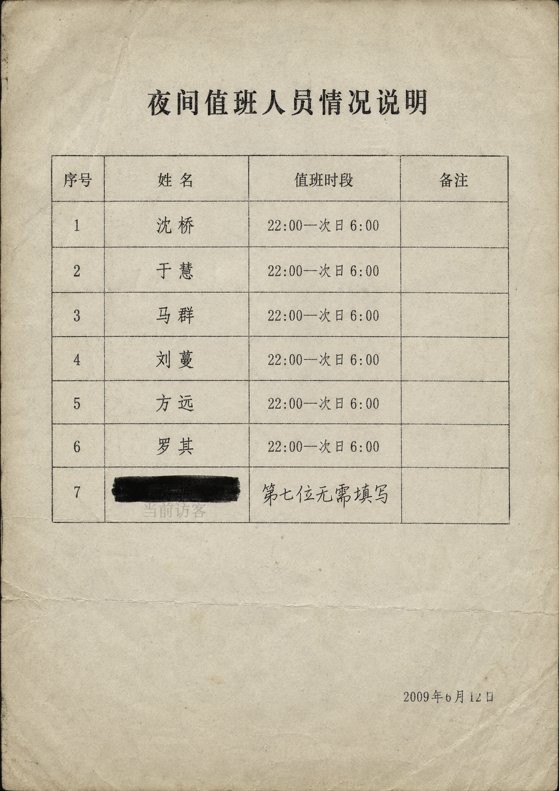

P.13
值班人员情况说明
首页
|
新闻公告
|
便民热线
|
留言回访
|
下载中心
|
失物招领
|
站内搜索
|
联系我们
事故通报
> 值班人员说明
附件二：值班人员情况说明.jpg

#
姓名
工号
岗位
备注
1
沈桥
HN-0017
夜班接线员
红圈标记
2
于慧
HN-0023
夜班接线员
—
3
马群
HN-0031
夜班接线员
—
4
刘蔓
HN-0042
夜班接线员
—
5
方远
HN-0058
夜班接线员
—
6
罗其
HN-0066
夜班接线员
—
7
████████
—
—
手写：第七位无需填写
🔍 仔细查看照片（放大）
请不要让照片里的人发现你在看。